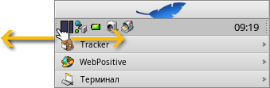

| Содержание |
|
Меню Трей Список запущенных приложений |
Deskbar
Deskbar - это маленькая панель, которая по умолчанию располагается в правом верхнем углу экрана. Это аналог панели задач с кнопкой Пуск из Windows. Она содержит меню, из которого вы можете запустить приложения и настройки, трей с часами и снизу - список запущенных приложений.

You can move the Deskbar to any corner or as a bar along the upper or lower border of the screen by gripping the knobbly area on one side of the tray (see arrows above) and drag & drop it into the new position.
You can also fold it into a more compact layout by drag & dropping the knobbly area onto Deskbar's Leaf menu. Being only the height of a regular window tab, even windows that take up the whole screen won't obscure the Deskbar tray with its clock and icons.
Ухватившись за шероховатую область с другой стороны трея и перетаскивая ее влево или вправо, можно менять ширину Deskbar:
При широком Deskbar в трее в один ряд помещается большее количество значков. Также реже обрезаются имена приложений в списке запущенных приложений, особенно если вы используете крупные значки.
 Меню
Меню
Меню раскроется после того, как вы щелкните мышью по верхней области Deskbar:

О системе Haiku - Показывает информацию о системе, лицензиях и проекте Haiku.
Найти... - Открывает диалог запросов.
Отображать репликанты - Активирует/деактивирует отображение иконки репликантов, которая используется для их перемещения, удаления и доступа к контекстному меню.
Подключить - Предлагает те же опции, что и меню при правом щелчке мыши по Рабочему столу (подробно описано в теме Подключение разделов).
Настроить Deskbar... - Открывает окно с настройками Deskbar (описано ниже).
Завершение работы... - Предлагает опции: и .
Недавние документы, папки, приложения - Список недавно открытых документов, папок и приложений (см. ниже).
Приложения, Демо, Апплеты, Настройки - список установленных приложений, демо, апплетов и настроек.
Вы можете добавить ссылки на другие программы (или на любую папку, документ, запрос и т.д.), поместив их в ~/config/settings/deskbar/menu/.
Настройки Deskbar

Панель настроек Deskbar разделена на три секции.
Приложения
Эти настройки влияют не на установленные приложения, а на поведение и вид списка запущенных приложений.
| Сортирует список запущенных приложений по алфавиту. | ||
| Даже при алфавитной сортировке Tracker будет отображаться первым в списке запущенных приложений. | ||
| Добавляет справа от названия приложения в Deskbar стрелку, которая позволяет разворачивать/сворачивать список окон приложения. | ||
| Для вновь запускаемых приложений список окон разворачивается автоматически. | ||
| Убирает текстовые ярлыки запущенных приложений. | ||
| Настраивает размер значков запущенных приложений. |
Меню
Первые несколько пунктов меню являются фиксированными, но вы можете настроить те, что находятся ниже пункта .
Здесь вы можете установить количество недавно открытых документов, папок и приложений, отображаемых в меню Deskbar, и выбрать, хотите ли вы вообще их видеть.
Кнопка откроет папку ~/config/settings/deskbar/menu/. В ней вы найдете файлы и папки, которые отображаются в Deskbar, по умолчанию это , , и .
Вы можете добавить или удалить такие элементы, как ссылки на приложения, документы, папки и даже запросы, просто скопировав их в эту папку или удалив их оттуда.
Приложения, установленные из пакетов, автоматически вносятся в меню Deskbar. В зависимости от количества установленных вами пакетов, оно может сильно разрастись. Если вы предпочитаете иметь полный контроль и видеть в меню только те приложения, которые вы внесете туда сами (возможно, разложив их по подпапкам согласно категориям), то вот как это можно сделать:
Создайте ссылку на папку menu по адресу ~/config/settings/deskbar/ и переименуйте ее в menu_entries. В Терминале это можно сделать следующей командой:
ln -s ~/config/settings/deskbar/menu ~/config/settings/deskbar/menu_entries
Окно
Наконец, настройки окна Deskbar.
| Deskbar всегда отображается поверх всех окон. | ||
| The Deskbar pops to the front when the mouse pointer touches where the Deskbar meets the screen edge, and is lowered when it leaves the Deskbar area. | ||
| Deskbar сворачивается до нескольких пикселей и появляется только если их касается указатель мыши. |
Трей

Помимо всего прочего, в трее располагаются часы. Наведите курсор мыши на часы - и вы увидите текущую дату. Щелчок левой кнопкой мыши по часам вызовет календарь. Щелчок правой кнопкой мыши по часам вызовет контекстное меню, из которого можно запустить настройку времени, даты и временной зоны, а также скрыть отображение часов.
Любая программа может установить иконку в трей для обеспечения быстрого доступа. Почтовый клиент, например, отображает другую иконку, когда у Вас есть непрочитанные письма и предлагает контекстное меню, например создание письма для отправки, для проверки почты. Другим примером является Контроллер процессов, использующий иконку в трее, которая отображает нагрузку процессора и использование памяти, а также предлагает контекстное меню.
Список запущенных приложений

Можно переключиться на запущенное приложение, нажав на него в списке Deskbar и выбрав любое его окно из подменю. Правым щелчком мыши по приложению в списке можно окна приложения или окна и само приложение.
Щелчок по приложению с зажатыми SHIFT CTRL скрывает все его окна, щелчок с зажатым CTRL снова показывает их.
When using the "expander" setting to show all windows of an application, you can middle-click on a window or app to start a new instance. For example, middle-clicking a running StyledEdit will open a new document window.
Maybe more useful: while holding SHIFT, a middle-click on a window closes it. Handy when you'd like to close some of many open Tracker windows, for example.
Если вы включили отображение списка окон в настройках Deskbar, то можете разворачивать/сворачивать их прямо под строкой приложения в списке запущенных приложений.
Перед каждым окном приложения находится иконка, которая отображает состояние окна. Светлая иконка означает, что окно развернуто, темная - свернута. Три полоски перед иконкой означают, что окно находится на другом рабочем столе.